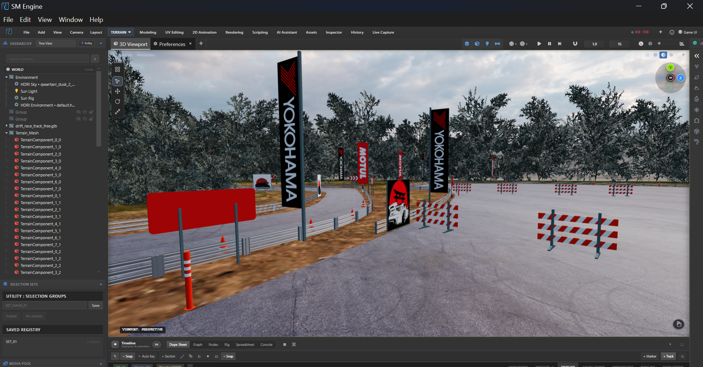
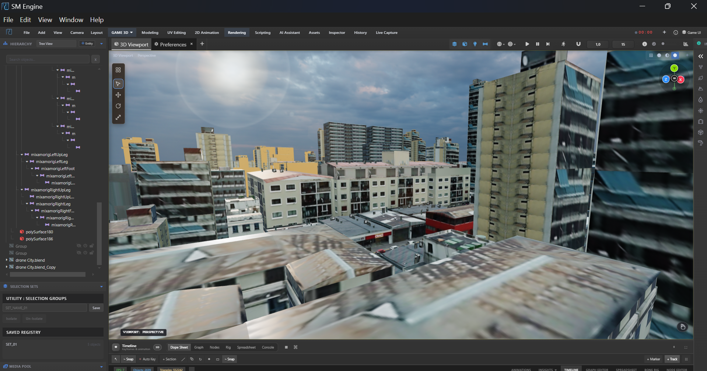
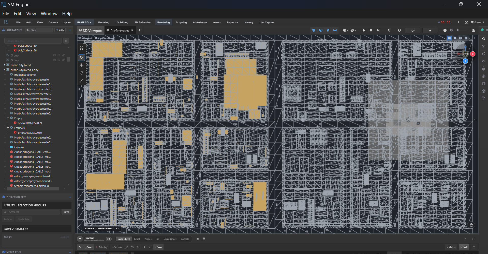

sm engine 1.0 — a real-time creation suite
SM Engine
A desktop space for turning a rough idea into a finished frame — without losing the scene, the decision or the thread between them.
Make worlds. Keep your flow.
SM Engine is an open-source desktop suite where modeling, node systems, animation, physical worlds, audio and shipping live in one project, one scene, one flow — so you never lose the thread between an idea and a finished frame.

CORE VIEWPORT + + + +One project. One place.
Pick the view that matches the decision in front of you. The scene stays put while the controls change around it — modeling, systems, environment, motion and finishing, all reading from the same source of truth.
Unified sm / world viewport
- scene
- The active scene anchors every mode
- context
- Viewport · outliner · inspector
- flow
- Model → simulate → animate → ship
- feedback
- Every action answers in real time
Less interface friction, more creative momentum. Shared scene, tools and shortcuts reduce context switching, so you keep a stable sense of place from blockout to final frame.
Consistent hierarchy and purposeful transitions show continuity — instead of making each tool feel like a different app.


